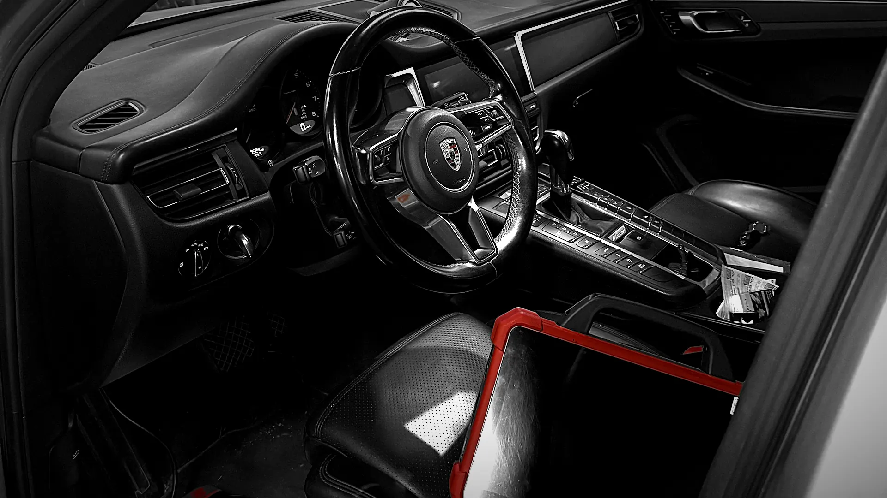
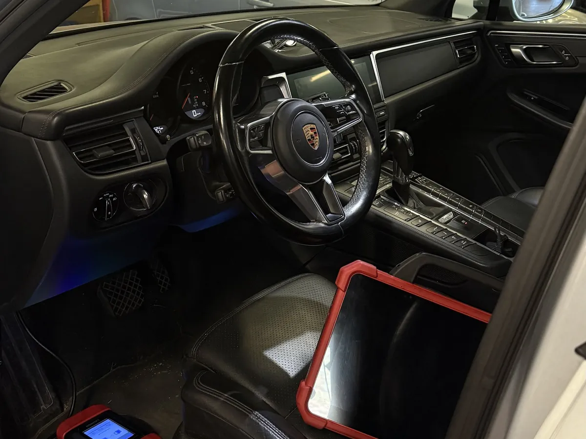
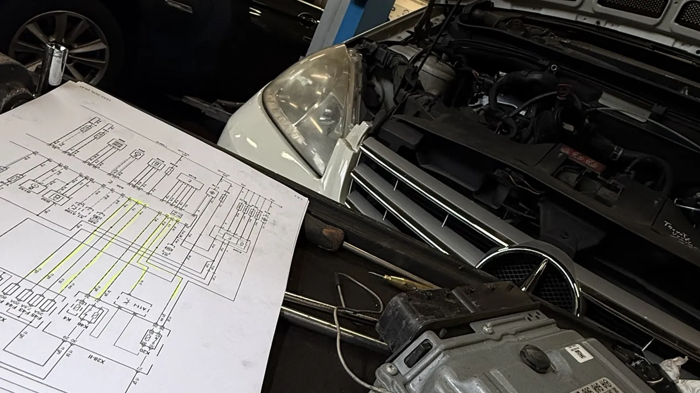
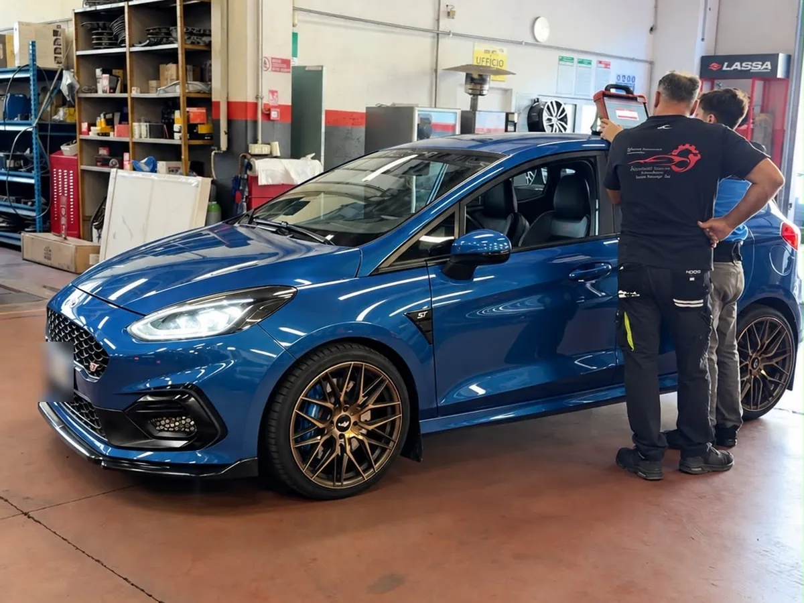
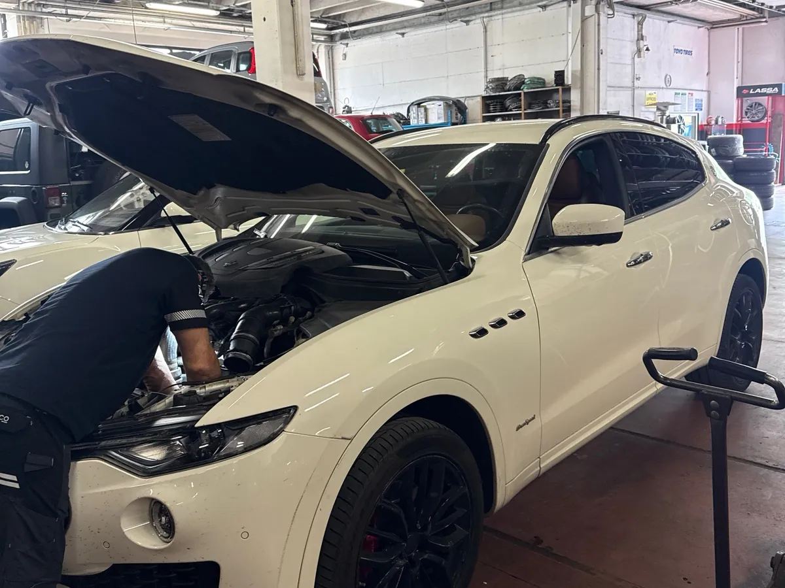
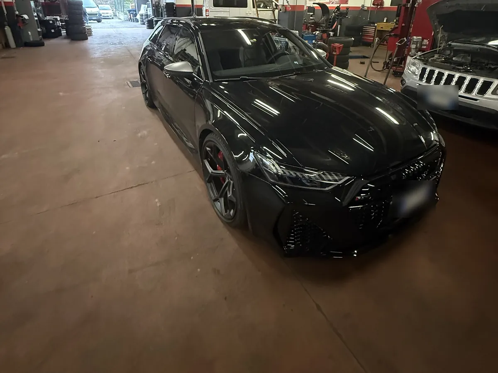

Elettrauto
a Saint-Marcel, a un quarto d'ora da Aosta
Diagnosi elettronica, batterie, luci e impianti: il guasto si trova leggendo i dati, non andando per tentativi.
Il guasto si trova leggendo i dati. Non per tentativi.
Le auto di oggi sono piene di centraline: colleghiamo gli strumenti di diagnosi, leggiamo cosa dice l’auto e interveniamo solo dove serve.
- Preventivo scritto prima di iniziare
- Tutte le marche, dall’utilitaria alla sportiva
- Saint-Marcel, dal 1986
Il lavoro, voce per voce.
-
01
Diagnosi computerizzata
Lettura centraline, spie e codici errore con strumenti aggiornati per tutte le marche.
-
02
Batterie e ricarica
Prova, sostituzione e registrazione della batteria sulle auto che lo richiedono.
-
03
Luci e fari
Lampade, fari a LED, regolazione e ripristino dei fari opacizzati.
-
04
Alternatori e motorini
Ricerca guasti su ricarica e avviamento, sostituzione con ricambi garantiti.
-
05
Chiavi e centraline
Programmazione chiavi, codifica componenti e ripristino di impianti manomessi.
Auto vere, scatti veri.
Niente foto di catalogo: sono le auto che passano dalla nostra officina. Tocca una foto per vederla grande.










Quattro passi, nessuna sorpresa.
- 01
Ci senti
Chiami, scrivi su WhatsApp o passi in officina: fissiamo quando portare l’auto.
- 02
Controlliamo
Guardiamo l’auto e ti spieghiamo cosa abbiamo trovato, con parole semplici.
- 03
Preventivo scritto
Sai prima cosa si fa e quanto costa. Si parte solo quando sei d’accordo.
- 04
Riconsegna
Ti ridiamo l’auto spiegandoti cosa abbiamo fatto, con i pezzi sostituiti se li vuoi vedere.
Le cose che ci chiedono più spesso.
Non trovi la tua? Chiamaci, ti rispondiamo noi.
Non sempre, ma va letta: con la diagnosi capiamo in pochi minuti se puoi continuare a guidare o se conviene fermarsi.
Si', montiamo autoradio, telecamere posteriori e sensori di parcheggio con cablaggi a regola d'arte.
Una lettura errori si fa in mezz'ora. Una ricerca guasto vera puo' richiedere piu' tempo: ti diciamo prima quanto e cosa comporta.
Gli altri settori dell’officina.
Porta la tua auto
da noi.
Zona Industriale 9, Saint-Marcel (AO) · Lun-Ven 8:00-13:00 e 15:00-19:00